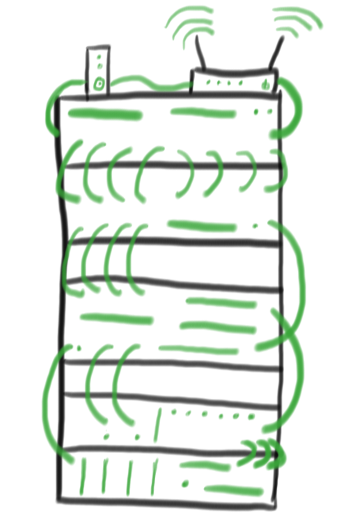

About us

- Who are we?
- - We are a small team of highly skilled technicians with many years of experience in various fields of computer science and technology repair. Most of our technicians are locally raised and have strong roots in the community. In addition to being local, all of our techs hold at a bare minimum, an active CompTIA A+ certification.
- What services do we provide?
- - We offer a wide variety of services ranging from basic PC tune ups to repairing screens on mobile devices. We also provide custom services such as building full PC's from scratch from the ground up, pending proper consultation with one of our certified technicians. For a full list of our pricing and services provided please click this link.
- Where can you find us?
- - You can find us at 123 Cheaha Ave. in Oxford, AL.
- When can I come by and bring in my device for repair?
- - 9 A.M. - 5 P.M. Monday through Friday
- - 12 P.M. - 8 P.M. Saturdays.
- - Closed on Sundays and most major holidays.
- How can I get in contact with Cheaha PC Repair?
- You can reach Cheaha PC Repair at (256)123-4567,
- Or you can send us an Email by filling out our contact form on our contact page. From there you can specify the type of service desired or issue that you're currently experiencing.